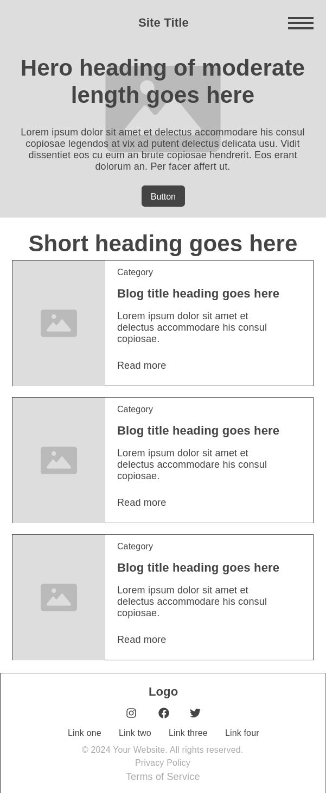
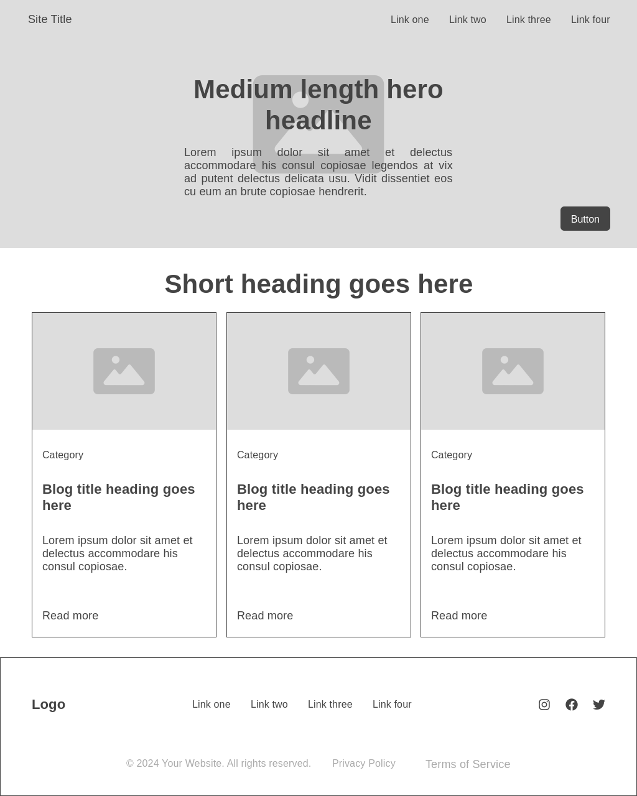

Name: Explore Tuxtla Travel
Reason: This name represents a travel agency specializing in tourism experiences in Tuxtla Gutiérrez, offering guided tours, hotel bookings, and travel packages.
Optional Domain: exploretuxtla.com
The purpose of this website is to promote tourism in Tuxtla Gutiérrez by offering travel packages, booking services, and local guides. The site will feature:
Primary Color: #04724D (Green) – Used for headers, navigation, and CTA buttons.
Secondary Color: #F4A261 (Warm Orange) – Used for accents, highlights, and interactive elements.
Example:
Heading Font: 'Poppins', sans-serif (Used for main headings and titles.)
Body Font: 'Open Sans', sans-serif (Used for general text and descriptions.)
Accent Font: 'Lobster', cursive (Used for special highlights and branding elements.)
Mobile View:
Desktop View:
